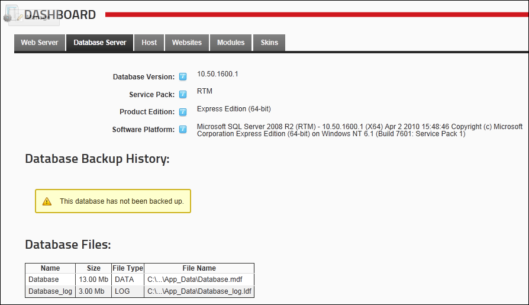

About the Dashboard
The Dashboard page (Host > Dashboard) provides a snapshot of your DotNetNuke Application. Whilst most setting displayed on the Dashboard module are configured via the Host Setting page, others can be configured in the Web.config file which can be edited using the Configuration Manager.
Dashboard information is divided into these sections: Web Server, Database Server, Host, Portals, Modules, Skins. Here's an overview of the details displayed in each section:
Web Server: This tab displays the following information about the web server where this DNN Application is located:
- OS Version:
The version of the Windows operating system installed on the web server. E.g. Microsoft Windows NT 6.1.7601 Service Pack 1
- Web Server Version:
The version of Internet Information Server (IIS). E.g. Microsoft-IIS/7.5
- .NET Framework Version:
The .NET version . E.g. 2.0.50727.5448
- ASP.NET Identity:
The Windows user account under which the application is running. This is the account which needs to be granted folder permissions on the server. E.g. NT AUTHORITY\NETWORK SERVICE
- Host Name:
The name of the Host Computer. E.g. MyComputer-PC
- Physical Path:
The physical location of the site root on the server. E.g. C:\inetpub\wwwroot\MyServer
- Site URL:
The principal URL for this site. E.g. awesomecycles.biz
- Relative Path:
The relative location of the application in relation to the root of the site. E.g. /awesomecycles.biz
- Server Time:
The current date and time for the web server. E.g. 1/31/2012 1:54:43 PM

Database Server: This tab displays the following information about the database server where this DNN Application is located. This tab is will not be displayed if the DNN application is installed on Microsoft Azure.
- Database Version:
The version of SQL Server used. E.g. 10.0.4000.0
- Service Pack:
The service pack(s) that have been installed. E.g. SP2
- Product Edition:
The edition of SQL Server installed. E.g. Express Edition (64-bit)
- Software Platform:
The full description of the SQL Server Software Platform installed. E.g. Microsoft SQL Server 2008 (SP2) - 10.0.4000.0 (X64) Sep 16 2010 19:43:16 Copyright (c) 1988-2008 Microsoft Corporation Express Edition (64-bit) on Windows NT 6.1 (Build 7601: Service Pack 1)
- Database Backup History:
Displays the last 20 database backups for this DotNetNuke installation. This list may not be complete if you regularly clean your database backup history tables.
- Database Files: Displays a list of data and log files for this DotNetNuke installation.

Host: This host tab displays the following information regarding the host settings for this DNN Application:
- DotNetNuke Product: The name for the DotNetNuke application you are running. E.g. DotNetNuke Platform
- DotNetNuke Version:
The version of DotNetNuke. E.g. 6.1.5
- Host GUID:
The site's unique identifier. 3461026C-0271-4EB8-8273-45FCB37FA64F
- CAS Permissions:
The Code Access Security (CAS) Permissions available for this site. E.g. ReflectionPermission, WebPermission, AspNetHostingPermission
- Data Provider:
The default data provider for the site. E.g. SqlDataProvider
- Caching Provider:
The default caching provider for the site. E.g. FileBasedCachingProvider
- Logging Provider:
The default logging provider for the site. E.g. DBLoggingProvider
- Html Editor Provider:
The default Html editor provider for the site. E.g. >TelerikEditorProvider
- Friendly URL Provider:
The default friendly URL provider for the site. E.g. DNNFriendlyUrl
- Friendly URLs Enabled:
Displays whether Friendly URL's are enabled for the site. I.e. True or False
- Friendly URL Type:
Displays the type of Friendly URL's used for the site. E.g. humanfriendly
- Scheduler Mode:
The Timer Method maintains a separate thread to execute scheduled tasks while the worker process is alive. Alternatively, the Request Method executes tasks when HTTP Requests are made. You can also disable the scheduler by selecting Disabled. E.g. REQUEST_METHOD
- Web Farm Enabled:
Displays True if the site operates in a Web Farm or False if it doesn't.
- jQuery Version: This is the version of jQuery this DotNetNuke installation is running. E.g. 1.6.4
- jQuery UI Version: This is the version of jQuery UI this DotNetNuke installation is running E.g. 1.8.16

Websites: This tab displays the following information for each site in this DotNetNuke Application:
- Website: The site name as set in the Host Title (See "Setting the Host Details") or Site Title (See "Configuring your Site Details") field.
- GUID: The Global Unique Identifier
- Pages: Number of site pages
- Roles: Number of security roles
- Users: Number of registered users

Modules: This tab displays information about the modules that are installed on this DNN Application:
- Module: Displays the module name
- Version: Displays the module version
- Instances: Displays the number of instances of the module

Skins: This tab displays information about the skins that are installed on this DNN Application:
- Skin: Displays the skin name
- In Use: Displays True if the skin is currently in use or False if it is not